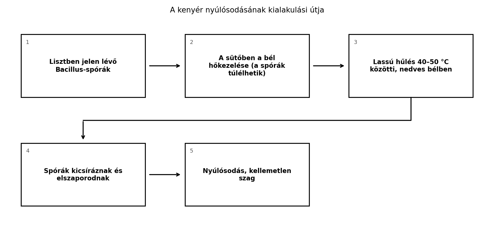
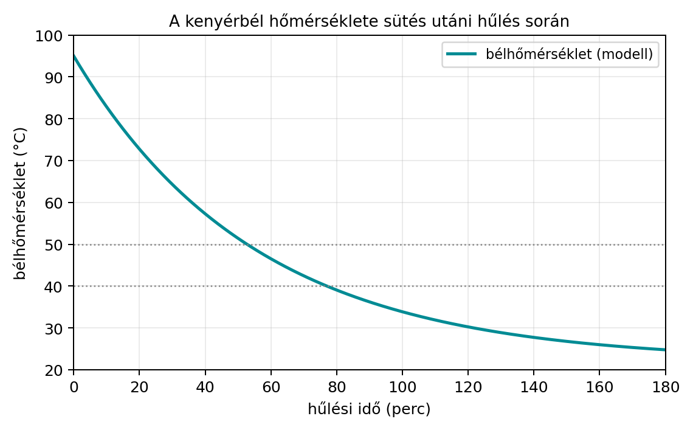

Hajnali kenyérgyártás után a pék a meleg kenyeret szorosan egymás mellé rakja a hűtőpolcra, és a rekeszt műanyag fóliával takarja le, hogy „ne száradjon ki”. Másnap reggel a vevő a kenyérbélből kellemetlen, gyümölcsre emlékeztető szagot érez, a bél nyúlósan húzódik, és sárgás-barnás foltok látszanak benne. A pék nem tudja ránézésre eldönteni, hogy mikrobiális romlás, penészgomba vagy csak egyszerű száradás történt-e. Pedig ez a döntés a termékbiztonságot és a pékség hírnevét érinti.
Ebben az alfejezetben három klasszikus kenyérbetegséget (nyúlósodás, penészedés, véres kenyér) és a mikrobiális romlástól elkülönülő terméköregedést tárgyaljuk. A cél, hogy a tanuló a tünetekből, a gyártási és tárolási körülményekből felismerje az okot, és megelőzési tervet tudjon készíteni.
Először nézzük a nyúlósodás kialakulásának útját.

A bél hőmérsékleti viszonyait egy lehűlési görbével is szemléltethetjük. A meleg, páradús bél a kórokozó spórák számára akkor a legkedvezőbb, ha a hőmérséklet hosszú ideig a veszélyes tartományban marad.

Definíció. Mikrobiális kenyérromlásnak nevezzük, ha a kenyérben mikroorganizmusok (baktériumok, penészgombák, pigmenttermelő baktériumok) szaporodnak el, és a termék érzékszervi tulajdonságait, illetve biztonságát romlásnak teszik ki.
Definíció. Kenyérbetegségnek nevezzük a kenyérben jellemzően előforduló, meghatározott mikrobiális okokra visszavezethető romlást, így a nyúlósodást, a penészedést és a véres kenyeret.
A terméköregedés ezzel szemben nem mikrobiális romlás, hanem fizikai-kémiai folyamat, amely a friss kenyeret idővel szikkadtá, keménnyé, kevésbé élvezetessé teszi. A két folyamatot gyakran összekeverik, ezért a péknek meg kell tanulnia a jelekből különbséget tenni.
| Betegség / elváltozás | Elsődleges okozó | Jellemző jel | Kedvező körülmény |
|---|---|---|---|
| Nyúlósodás | Spórás baktériumok (Bacillus fajok) | Nyúlós, fonalas bél, édeskés, gyümölcsös szag | Lassú hűlés meleg, nedves bélben |
| Penészedés | Penészgombák | Felületi penésztelepek, dohos szag, esetleg mikotoxin | Nedves, meleg tárolás, rossz szellőzés |
| Véres kenyér | Pigmenttermelő baktérium (pl. Serratia marcescens – ellenőrizendő) | Vörös, rózsaszín foltok a héjon | Nedves, meleg felület, rossz higiénia |
| Terméköregedés | Keményítő-retrogradáció, vízvándorlás | Keményedő bél, lágyuló héj, csökkenő frissesség | Idő eltelte, főleg kb. 0–4 °C közötti (hűtőszekrényi) tárolás |
A táblázat jeleit az alábbi képtábla rajzban is mutatja. A nyúlós kenyérnél (A) a kettétört szelet két fele között fonalas szálak húzódnak, a bél közepe sárgás-barnás, nedves, ragacsos. A penészes kenyéren (B) kerek telepek ülnek a héjon és a vágott felületen, a szemmel nem látható fonalak pedig mélyebbre hatolnak. A véres kenyér (C) héján és héja alatt vöröses, rózsaszín foltok vannak. Az öregedő kenyér (D) bele kemény, morzsálódik, de nincs rajta folt, és nincs idegen szaga.
A döntés szempontjából a legfontosabb különbség: az A, B és C eset nem biztonságos élelmiszer, a termék nem hozható forgalomba, selejt, és a tételt vizsgálni kell; a D eset (öregedés) minőségi hiba. A leggyakoribb tévesztés az öregedés és a kezdődő nyúlósodás összekeverése – ilyenkor a szag és a széthúzási próba dönt. A HTML-kiadásban a „Melyik ez?” gyakorló egy tünetleírást ad, és a tanuló a megfelelő képre kattintva kap visszajelzést a teendőről.
A liszt mikroflórájából ismerjük (lásd A liszt mikroflórája, liszthibák és lisztromlás alfejezet), hogy a liszt gyakran tartalmaz spórás baktériumokat. A sütés során a tészta belső hőmérséklete jellemzően 96–98 °C körülire emelkedik. A hő a baktériumok vegetatív alakjait elpusztítja, de a spórák túlélhetik, különösen, ha a sütési idő elégtelen vagy a bélzet nem sül át teljesen.
Definíció. Nyúlósodásnak (köznyelven: meghúzódott, nyúlós kenyeres, angolul rope) nevezzük azt a kenyérbetegséget, amikor a kenyérbélben spórás baktériumok elszaporodnak, a bélzet szerkezete fonalasan nyúlóvá, ragadóssá válik, és jellemzően édeskés, dinnyére vagy gyümölcsre emlékeztető szag alakul ki.
A nyúlósodást leggyakrabban a Bacillus subtilis fajkörbe tartozó, régebben Bacillus mesentericus néven is említett spórás baktériumok okozzák (ellenőrizendő: a fajmeghatározás a szakirodalomban változhat). A spórák a liszttel, porral, szennyezett eszközökkel kerülnek a tésztába, és a sütést túlélve a meleg, nedves bélben kicsíráznak.
Szabály. A nyúlósodás kialakulásának kedvező feltételei:
Higiénia. A nyúlósodásos kenyeret nem szabad forgalomba hozni, nem szabad a hibás részt eltávolítva felhasználni, és nem szabad más termékekkel együtt tárolni. A gyanús tételt vissza kell tartani, a bélzetből mintát kell venni, és az üzemi naplóba be kell jegyezni a jelenséget.
HACCP. A nyúlósodás szempontjából a sütés utáni hűtés és a kenyér tárolása kritikus szabályozási pont lehet. A megfigyelés (monitoring) itt a bélhőmérséklet és a hűtési idő rendszeres mérése, valamint a kenyér szagának és bélhúzásának ellenőrzése. A határérték üzemenként eltérő, de tanulási példaként: a bél a 40–50 °C közötti tartományt a lehető leggyorsabban (pl. 1–1,5 órán belül) hagyja el, csomagolás pedig csak 30–35 °C-os bélhőmérséklet alatt történjen (tanulási példa, ellenőrizendő: a pékség HACCP-terve, hatósági útmutató). A fenti görbe szerint egy 1 kg-os kenyér helyes, szellős hűtéssel ezt teljesíti; szorosan rakva vagy letakarva viszont sokkal tovább marad a veszélyes sávban.
A megelőzés legfontosabb lépései:
A penészgombák spórái a levegőben, a porban, a lisztben, a csomagolóanyagon és a berendezési tárgyakon egyaránt jelen vannak. A kenyér felülete és héja nem steril, ezért ha a környezet nedves és meleg, a penészgombák csírázni kezdenek, és a kenyér felületén zöldes, fekete, szürkés vagy fehéres telepeket alkotnak.
Definíció. Penészedésnek nevezzük a kenyér felületén látható penészgombatelepek kialakulását, amely gyakran dohos, mustos szaggal és elszíneződéssel jár együtt.
Figyelem. A penészes kenyér nemcsak esztétikai hiba. Egyes penészgombák mikotoxinokat termelnek, amelyek az emberre és állatra mérgező anyagcseretermékek. Sok mikotoxin hőálló, ezért a penészes kenyér felhasználásával készült morzsában, babajkában vagy más termékben sem bomlik el a sütés során. A penészes részt levágni nem biztonságos megoldás, mert a mikotoxinok és a penészfonalak a szemmel nem látható részeken is jelen lehetnek.
Előírás. Az élelmiszerjog szerint nem hozható forgalomba olyan élelmiszer, amely nem biztonságos (178/2002/EK rendelet). A penészes kenyér forgalmazása és feldolgozása tilos. Az egyes mikotoxinokra vonatkozó uniós határértékeket külön rendelet állapítja meg (Bizottság (EU) 2023/915 rendelete az élelmiszerekben előforduló egyes szennyező anyagok felső határértékeiről, amely felváltotta az 1881/2006/EK rendeletet – ellenőrizendő: hatályos szöveg és módosítások). A pék feladata a penészes termék kivonása és a hatósági esemény elkerülése, nem a laboratóriumi vizsgálat értelmezése.
HACCP. A penészedés megelőzésében a nyersanyag-átvétel, a tárolás és a csomagolás lehet kritikus pont. Az ellenőrzés során figyelni kell:
Tanulási példaként a kenyér tárolási hőmérséklete 18–22 °C, relatív páratartalma 60–70% között javasolt, de ezek üzemi technológiai lapon, termékre szabottan szerepelnek (ellenőrizendő: üzemi HACCP-terv, gyártói adatlap). A penészgombák szaporodását a 25 °C feletti hőmérséklet és a 85% feletti relatív páratartalom jelentősen gyorsítja (ellenőrizendő).
A megelőzés lépései:
A „véres kenyér” kifejezés megtévesztő: a kenyérben nem vér, hanem vörös pigmentet termelő baktériumok szaporodnak el. A jelenség ritka, de ha megjelenik, erősen rontja a vevői bizalmat.
Definíció. Véres kenyérnek nevezzük azt a kenyérbetegséget, amikor a kenyér héján vagy a héj alatt vörös, rózsaszín, esetleg vérre emlékeztető elszíneződés jelenik meg, amelyet pigmenttermelő baktériumok okoznak.
A leggyakrabban említett kórokozó a Serratia marcescens nevű baktérium, amely vörös pigmentet (prodigiosint) termel (ellenőrizendő: a fajnév és a pigment megnevezése a laboratóriumi mintához kötött). A baktérium a környezetben, nedves felületeken, mosogatókban, csöpögő vízben fordul elő. A kenyér akkor fertőződik, ha sütés után nedves, meleg felülettel érintkezik, például nem teljesen száraz hűtőpolcon, nedves kendővel letakart kenyéren, vagy szennyezett kenyérrekeszen.
Szabály. A véres kenyér megelőzése a higiéniára és a szárazon tartásra épül:
HACCP. A véres kenyér megelőzésében a sütés utáni érintkezési felületek és a csomagolóanyag tisztasága a kritikus pont. A határérték itt nem hőmérsékleti, hanem higiéniai: szemrevételezéssel és mikrobiológiai mintavétellel ellenőrzik a felületek tisztaságát (ellenőrizendő: az üzem HACCP-terve, NÉBIH útmutató).
A terméköregedés nem mikrobiális, hanem fizikai-kémiai folyamat. A frissen sült kenyér bélzete puha, rugalmas, mert a keményítő a sütés során vizet vesz fel, részben kocsonyásodik, és a gluténhálózat rugalmas. Az idő múlásával a keményítő visszakristályosodik (retrogradáció), a víz elvándorol a gluténhálózatból, a bélzet kiszárad és keményedik, a héj pedig a belső nedvességtől felpuhul. Ez a folyamat a magyar szaknyelvben öregedés, angolul staling.
Definíció. Terméköregedésnek nevezzük a kenyér bélzetének és héjának azon fizikai-kémiai elváltozását, amely a hőkezelés után az idő előrehaladtával következik be, és a frissesség elvesztésével jár.
Szabály. A terméköregedés jelei:
A terméköregedés szempontjából fontos, hogy a kenyér nem a hűtőszekrényben öregszik a leglassabban. A keményítő retrogradációja kb. 0–4 °C között a leggyorsabb, ezért a kenyér hűtőben hamarabb szikkad, mint száraz, szobahőmérsékletű kenyértartóban. A fagyasztás viszont (−18 °C alatt) gyakorlatilag megállítja az öregedést, ezért a kenyér fagyasztva hosszabb ideig megőrzi frissességét.
A késleltetés módjai:
Figyelem. Az öregedés nem élelmiszer-biztonsági kockázat, hanem minőségi eltérés. A nyúlósodásos, penészes kenyér viszont élelmiszer-biztonsági kockázat, és a terméket ki kell vonni a forgalomból.
Valós eset. Egy kis pékségben a reggeli műszakban sütött 2 kg-os kenyereket a pék a kisütés után azonnal, szorosan egymás mellé, műanyag ládába rakta, és a ládát letakarta, hogy „ne hűljön ki túl gyorsan, mert akkor szikkadt lesz”. A kenyeret délután kezdték értékesíteni. Egyik vevő visszahozta a kenyeret: a bélzet már nem volt szép, szakításnál fonalasan húzódott, és dinnyés, édeskés szagot érzett.
Lehetséges okok:
Ellenőrzés: A pék megméri a kenyérbél hőmérsékletét a következő tételnél, megvizsgálja a hűtési időt, és megvizsgálja a bélzet pH-ját. A gyanús tételből mintát különít el. A hibás tételt nem hozza forgalomba.
Valódi ok: A hűtési módszer volt a fő hiba. A kenyerek meleg, páradús állapotban, szellőzés nélkül maradtak, így a bél hőmérséklete hosszú ideig a 40–50 °C közötti, nyúlósodást okozó baktériumok számára kedvező tartományban volt.
Javítás és megelőzés:
A tanulási cél szerint megelőzési tervet készítünk nyúlósodás és penészedés ellen. A terv a következő lépéseket tartalmazza:
Allergén. Ebben az alfejezetben a kenyérbetegségek önmagukban nem allergének, de a penészspórák belélegzése munkahelyi allergiás vagy irritatív tüneteket okozhat. A penészes kenyeret ezért kesztyűben, védőmaszkban érdemes eltávolítani, különösen, ha az alkalmazott érzékeny a penészre. A takarításnál kerülni kell a porfelverést.
Előírás.
A kenyér minőségi ellenőrzése során az alábbiakat kell figyelni:
A minőségellenőrzési naplóba a sütési bélhőmérsékletet, a hűlési időt, a tárolási hőmérsékletet és a vizsgált tétel sorsát kell bejegyezni.
1. Igaz vagy hamis? A penészes kenyeret a penész levágása után biztonságosan fel lehet használni.
2. Igaz vagy hamis? A kenyér hűtőszekrényben mindig lassabban öregszik, mint szobahőmérsékleten.
3. Sorolj fel két jelet, amely a nyúlósodásra utal.
4. Melyik HACCP-pont a legfontosabb a nyúlósodás megelőzésében a sütés után?
5. Miért tilos a penészes kenyeret morzsakészítéshez felhasználni?
1. feladat (A) Párosítsd a betegséget a jellemzőjével: nyúlósodás, penészedés, véres kenyér, terméköregedés.
2. feladat (A) Nevezd meg a nyúlósodást okozó mikroorganizmus-csoportot, és írd le, hogyan éli túl a sütést.
3. feladat (B) Egy pékségben a nyári melegben megnőtt a penészes kenyerek aránya. Milyen adatokat gyűjtenél a hűtőtérben, és milyen higiéniai intézkedéseket javasolnál?
4. feladat (B) Állítsd sorrendbe a nyúlósodás elleni megelőzési lépéseket a gyártástól a tárolásig, és indokold, miért fontos a gyors hűtés.
5. feladat (C) Egyik reggel a pék azt tapasztalja, hogy a búzakenyér bélzete fonalasan húzódik, és dinnyére emlékeztető szagot érez. A tételt az előző este sütötték. Végezd el a hibakeresést: tünet, lehetséges okok, ellenőrzés, valódi ok, javítás, megelőzés.
6. feladat (D) Készíts egy egyszerű megelőzési tervet egy olyan kis pékség számára, amely penészedésre és nyúlósodásra is panaszkodik. A tervben térj ki a hűtési, tárolási, tisztítási és ellenőrzési feladatokra.
| Betegség / elváltozás | Jellemző |
|---|---|
| Nyúlósodás | fonalasan nyúló bél, dinnyeszag |
| Penészedés | felületi penésztelepek, dohos szag |
| Véres kenyér | vörös, rózsaszín foltok a héjon |
| Terméköregedés | keményedő bél, puhuló héj |
A nyúlósodást spórás baktériumok, leggyakrabban a Bacillus subtilis fajkörbe tartozó fajok okozzák (ellenőrizendő). A baktériumok spórát képeznek, amelyek hőállóak, és a sütés során a bélzet 96–98 °C-os hőmérsékletét is túlélhetik. Amikor a kenyérbél lassan hűl le, a spórák kicsíráznak, és a baktériumok elszaporodnak.
Gyűjtendő adatok: a hűtőtér léghőmérséklete napszaktól függően, a relatív páratartalom, a kenyerek hűlési ideje, a tárolófelületek tisztasága, a csomagolás előtti bélhőmérséklet, a penészes termékek aránya.
Javasolt intézkedések:
Helyes sorrend:
A gyors hűtés azért fontos, mert a nyúlósodást okozó baktériumok spórái a 40–50 °C közötti, meleg, nedves bélben csíráznak ki a leggyorsabban. Minél rövidebb ideig van a bél ebben a tartományban, annál kisebb a kockázat.
Tünet: A kenyérbél fonalasan nyúlik, dinnyés szagú.
Lehetséges okok: lassú hűlés meleg, párás környezetben; nem teljes átsütés; szennyezett hűtőpolc vagy ládák; a tészta pH-ja nem volt elég alacsony; a liszt nagy számú Bacillus-spórát tartalmazott.
Ellenőrzés: bélhőmérséklet és hűlési idő mérése a következő tételnél; a hűtőtér és ládák szemrevételezése, mikrobiológiai mintavétel; a bél pH-jának mérése; lisztszállítmány érzékszervi vizsgálata.
Valódi ok: A leggyakrabban a lassú hűlés és a szellőzés hiánya. A kenyereket melegen, szorosan egymásra rakva, letakarva hagyták, így a bél órákig a nyúlósodást okozó baktériumok számára kedvező hőmérsékleten maradt.
Javítás: A gyanús tételt ki kell vonni a forgalomból, a ládákat fertőtleníteni, a hűtési módszert szellős rácsra változtatni.
Megelőzés: gyors hűtés, teljes átsütés, savanyítás, tiszta eszközök, rendszeres ellenőrzés.
Egy lehetséges megelőzési terv:
A nyúlósodást a liszttel vagy szennyezett eszközökkel bekerülő spórás baktériumok okozzák, amelyek túlélik a sütést, majd a lassan hűlő, meleg, nedves kenyérbélben elszaporodnak. A jele a fonalasan nyúló bél és a gyümölcsös, dinnyére emlékeztető szag. A penészedést penészgombák okozzák, és hőálló mikotoxinokkal járhat, ezért a penészes kenyeret tilos forgalmazni és felhasználni. A véres kenyér vörös pigmenttermelő baktériumoktól származó elszíneződés, amely nedves, meleg, rosszul tisztított felületeken alakul ki. A terméköregedés ezzel szemben fizikai-kémiai folyamat, amelynek során a bél keményedik, a héj puhul; ezt a hűtőtárolás gyorsítja, a fagyasztás pedig gyakorlatilag leállítja. A megelőzés alapja a teljes átsütés, a gyors hűtés, a száraz, tiszta tárolás és a savanyított tészta. A nyúlósodás, a penészedés és a véres kenyér felismerését és a hibakeresési sémát a Kenyérhibák és okaik: hibakeresés alfejezet használja fel, ahol a gyakorlati kenyérhibákat is elemezzük.
A fejezet az általános sütőipari mikrobiológiai, higiéniai és tartósítási ismeretekre épül. A jogszabályi hivatkozások a következő típusokba tartoznak:
A Bacillus fajok, a Serratia marcescens és a pigment neve szakirodalmi ismeret, a pontos fajmeghatározás laboratóriumi vizsgálathoz kötött (ellenőrizendő: aktuális mikrobiológiai nevezéktan). A hőmérsékleti és időparaméterek tanulási példák, az üzemi HACCP-tervben és a gyártói adatlapban rögzített értékekkel helyettesítendők.